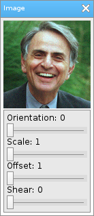

Löve Frames - The Image Object
Return to Index
Information
The image object is basically just an image with customizable color.
Example Use
local frame = loveframes.Create("frame")
frame:SetName("Image")
frame:SetSize(138, 315)
frame:CenterWithinArea(unpack(demo.centerarea))
local image = loveframes.Create("image", frame)
image:SetImage("resources/images/carlsagan.png")
image:SetPos(5, 30)
local panel = loveframes.Create("panel", frame)
panel:SetPos(5, 160)
panel:SetSize(128, 150)
local text1 = loveframes.Create("text", panel)
text1:SetPos(5, 5)
text1:SetText("Orientation: ")
local slider1 = loveframes.Create("slider", panel)
slider1:SetPos(5, 20)
slider1:SetWidth(118)
slider1:SetMinMax(0, 360)
slider1:SetDecimals(0)
slider1.OnValueChanged = function(object)
image:SetOrientation(object:GetValue())
end
text1.Update = function(object, dt)
object:SetText("Orientation: " ..slider1:GetValue())
end
local text2 = loveframes.Create("text", panel)
text2:SetPos(5, 40)
text2:SetText("Scale")
local slider2 = loveframes.Create("slider", panel)
slider2:SetPos(5, 55)
slider2:SetWidth(118)
slider2:SetMinMax(1, 2)
slider2:SetDecimals(5)
slider2.OnValueChanged = function(object)
image:SetScale(object:GetValue(), object:GetValue())
end
text2.Update = function(object, dt)
object:SetText("Scale: " ..slider2:GetValue())
end
local text3 = loveframes.Create("text", panel)
text3:SetPos(5, 75)
text3:SetText("Offset")
local slider3 = loveframes.Create("slider", panel)
slider3:SetPos(5, 90)
slider3:SetWidth(118)
slider3:SetMinMax(1, 50)
slider3:SetDecimals(5)
slider3.OnValueChanged = function(object)
image:SetOffset(object:GetValue(), object:GetValue())
end
text3.Update = function(object, dt)
object:SetText("Offset: " ..slider3:GetValue())
end
local text4 = loveframes.Create("text", panel)
text4:SetPos(5, 110)
text4:SetText("Shear")
local slider4 = loveframes.Create("slider", panel)
slider4:SetPos(5, 125)
slider4:SetWidth(118)
slider4:SetMinMax(0, 10)
slider4:SetDecimals(5)
slider4.OnValueChanged = function(object)
image:SetShear(object:GetValue(), object:GetValue())
end
text4.Update = function(object, dt)
object:SetText("Shear: " ..slider4:GetValue())
end

Event Callbacks
The image object has no unique event callbacks.
Methods
SetImage - Sets the object's image
- Note: The argument in this function can be a path to an image or an image already created with love.graphics.newImage.
- Returns 1 value: image [image]
- Returns 4 values: r [number], g [number], b [number], a [number]
- Returns 1 value: orientation [number]
- Returns 1 value: scalex [number]
- Returns 1 value: scaley [number]
- Returns 2 values: scalex [number], scaley [number]
- Returns 1 value: offsetx [number]
- Returns 1 value: offsety [number]
- Returns 2 value: offsetx [number], offsety [number]
- Returns 1 value: shearx [number]
- Returns 1 value: sheary [number]
- Returns 2 values: shearx [number], sheary [number]
- Returns 2 values: imagewidth [number], imageheight [number]
- Returns 1 value: imagewidth [number]
- Returns 1 value: imageheight [number]
- Note: The argument in this function can be a path to an image or an image already created with love.graphics.newImage.
object:SetImage(image[string or image])GetImage - Gets the object's image
- Returns 1 value: image [image]
local image = object:GetImage()SetColor - Sets the objects color
object:SetColor(r[number], g[number], b[number], a[number])GetColor - Gets the objects color
- Returns 4 values: r [number], g [number], b [number], a [number]
local r, g, b, a = object:GetColor()SetOrientation - Sets the objects orientation
object:SetOrientation(orientation[number])GetOrientation - Gets the objects orientation
- Returns 1 value: orientation [number]
local orientation = object:GetOrientation()SetScaleX - Sets the object's x scale
object:SetScaleX(scalex[number])GetScaleX - Gets the object's x scale
- Returns 1 value: scalex [number]
local scalex = object:GetScaleX()SetScaleY - Sets the object's y scale
object:SetScaleY(scaley[number])GetScaleY - Gets the object's y scale
- Returns 1 value: scaley [number]
local scaley = object:GetScaleY()SetScale - Sets the object's x and y scale
object:SetScale(scalex[number], scaley[number])GetScale - Gets the object's x and y scale
- Returns 2 values: scalex [number], scaley [number]
local scalex, scaley = object:GetScale()SetOffsetX - Sets the object's x offset
object:SetOffsetX(offsetx[number])GetOffsetX - Gets the object's x offset
- Returns 1 value: offsetx [number]
local offsetx = object:GetOffsetX()SetOffsetY - Sets the object's y offset
object:SetOffsetY(offsety[number])GetOffsetY - Gets the object's y offset
- Returns 1 value: offsety [number]
local offsety = object:GetOffsetY()SetOffset - Sets the object's x and y offsets
object:SetOffset(offsetx[number], offsety[number])GetOffset - Gets the object's x and y offsets
- Returns 2 value: offsetx [number], offsety [number]
local offsetx, offsety = object:GetOffset()SetShearX - Sets the object's x shear
object:SetShearX(shearx[number])GetShearX - Gets the object's x shear
- Returns 1 value: shearx [number]
local shearx = object:GetShearX()SetShearY - Sets the object's y shear
object:SetShearY(sheary[number])GetShearY - Gets the object's y shear
- Returns 1 value: sheary [number]
local sheary = object:GetShearY()SetShear - Sets the object's x and y shear
object:SetShear(shearx[number], sheary[number])GetShear - Gets the object's x and y shear
- Returns 2 values: shearx [number], sheary [number]
local shearx, sheary = object:GetShear()GetImageSize - Gets the object's image size
- Returns 2 values: imagewidth [number], imageheight [number]
local imagewidth, imageheight = object:GetImageSize()GetImageWidth - Gets the object's image width
- Returns 1 value: imagewidth [number]
local imagewidth = object:GetImageWidth()GetImageHeight - Gets the object's image height
- Returns 1 value: imageheight [number]
local imageheight = object:GetImageHeight()